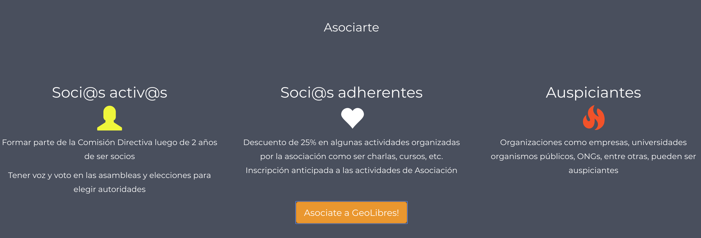

había una vez un mendocino...
...corría el año 2010 y era joven e iluso.
Viajó a Barcelona y todo cambió.
años mas tarde...
el 30 de Mayo de 2012 en la Ciudad de Buenos Aires
Primer Conferencia
geolibres.org.ar
